📖
الوراثة والصفات
الفصل الثاني: من الخلايا إلى المخلوقات الحية · الصفحات ٦٢ – ٧٠
❓ السؤال الأساسيكيف تنتقل الصفات من الآباء إلى الأبناء؟
💡 الزبدة⚖️ انتبهي للفرق🔍 توضيح⚠️ فخ في الاختبار✍️ حلّ سؤال الكتاب
في كل بطاقة فكرة واحدة: اقرئي فقرة الكتاب ثم حاشيتها، ثم اسحبي إلى البطاقة التالية 👈
أنظر وأتساءل
صغار الدببة في الصورة تشبه أمها. هل حدث ذلك مصادفة؟
✍️ الجوابفكّري ثم اضغطي
لا؛ فالصفات تنتقل من الآباء إلى الأبناء، وهذا ما يسمى الوراثة.
📝 مفردات الدرس
الوراثةانتقال الصفات الوراثية من الآباء إلى الأبناء.
الصفة الموروثةصفة تنتقل من الآباء إلى الأبناء.
الغريزةسلوك ومهارات تولد مع الإنسان أو الحيوان، ولا يتم اكتسابها.
الصفة المكتسبةلا تورث من أبوين، بل تُكتسب بالتعلم والتدريب.
الجينيحتوي على المعلومات الكيميائية للصفة الموروثة، وتُخزَّن الجينات على الكروموسومات.
الصفة السائدةصفة تمنع صفة أخرى من الظهور.
الصفة المتنحيةصفة تحجبها صفة سائدة.
مخطط السلالةمخطط يُستعمل لتتبع الصفات في العائلة، ودراسة الأنماط الوراثية.
حامل الصفةالشخص الذي ورث جين الصفة، ولكن الصفة لا تظهر عليه شكليًا.
الانتخاب الطبيعيعملية تكيّف الكائنات الحية في بيئة معينة بفضل امتلاكها بعض الخصائص التي تمكّنها من العيش في تلك البيئة أكثر من غيرها.
ص٦٤ · ما الوراثة؟
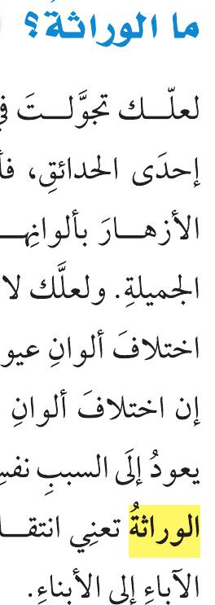
💡 الزبدة
اختلاف ألوان الأزهار والعيون سببه الوراثة: انتقال الصفات الوراثية من الآباء إلى الأبناء.
ص٦٤ · ما الوراثة؟
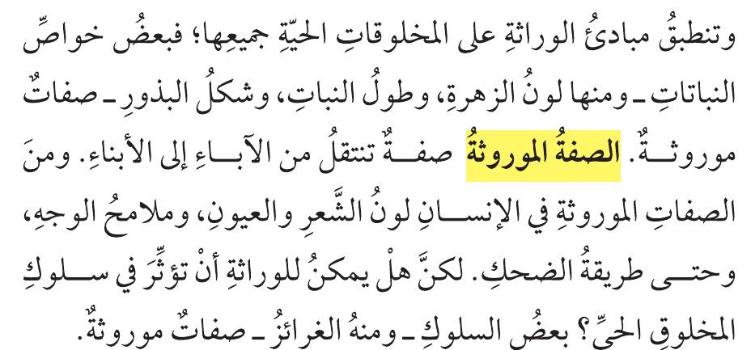
💡 الزبدة
الصفة الموروثة صفة تنتقل من الآباء إلى الأبناء.
في النبات: لون الزهرة، وطول النبات، وشكل البذور.
في الإنسان: لون الشعر والعيون، وملامح الوجه، وحتى طريقة الضحك.
في النبات: لون الزهرة، وطول النبات، وشكل البذور.
في الإنسان: لون الشعر والعيون، وملامح الوجه، وحتى طريقة الضحك.
ص٦٤ · ما الوراثة؟
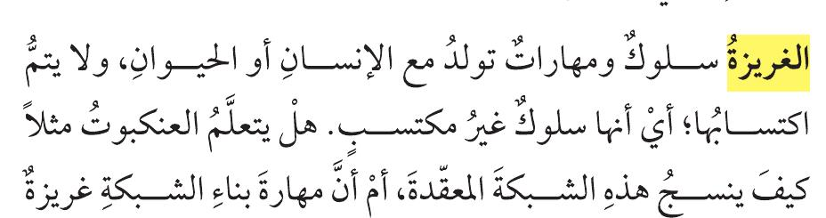
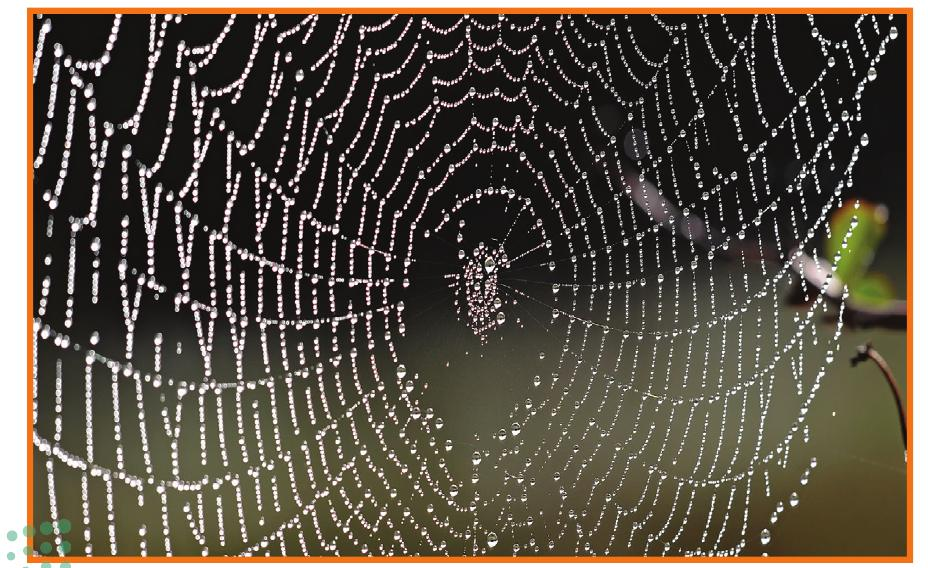
💡 الزبدة
الغريزة: سلوك ومهارات تولد مع الإنسان أو الحيوان، ولا يتم اكتسابها؛ أي أنها سلوك غير مكتسب.
🔍 توضيح
بناء العنكبوت لشبكته المعقدة، وبناء طائر الحباك لعشه، كلاهما سلوك غريزي موروث.
ص٦٥ · السلوك الغريزي والسلوك المكتسب
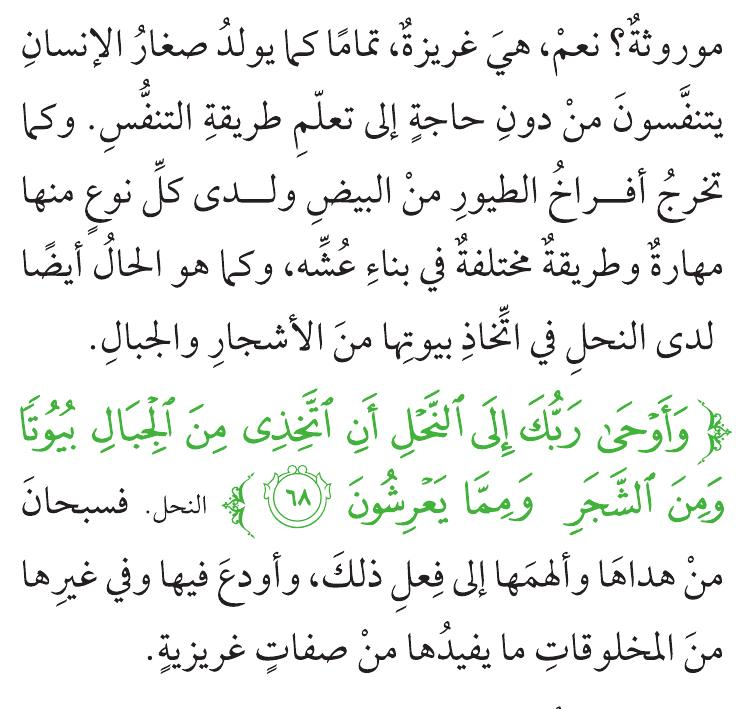
🔍 أمثلة الغريزة في الكتاب
يولد صغار الإنسان يتنفسون دون حاجة إلى تعلّم التنفس، وتخرج أفراخ الطيور من البيض ولدى كل نوع منها مهارة مختلفة في بناء عشّه، والنحل يتخذ بيوتًا من الأشجار والجبال.
ص٦٥ · السلوك الغريزي والسلوك المكتسب
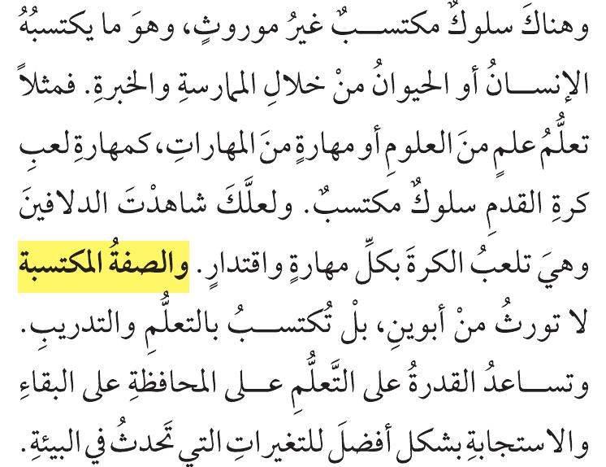
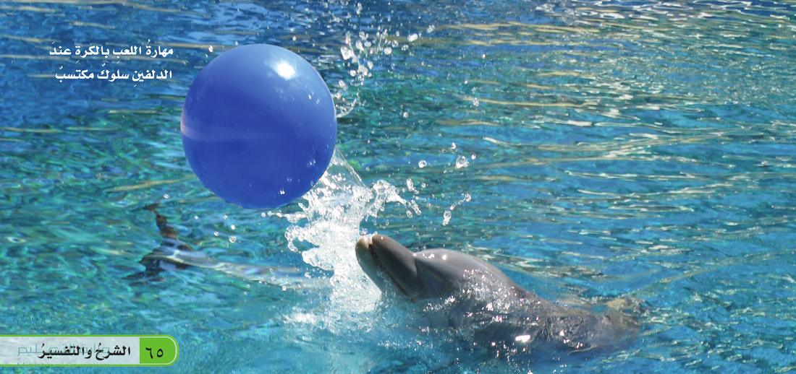
⚖️ انتبهي للفرق
الغريزة (موروث)
يولد مع المخلوق
التنفس، بناء العنكبوت لشبكته
السلوك المكتسب (غير موروث)
يُكتسب بالممارسة والخبرة، بالتعلم والتدريب
تعلّم علم من العلوم، لعب كرة القدم، لعب الدلفين بالكرة
💡 الزبدة
تساعد القدرة على التعلم على المحافظة على البقاء، والاستجابة بشكل أفضل للتغيرات التي تحدث في البيئة.
ص٦٥ · السلوك الغريزي والسلوك المكتسب
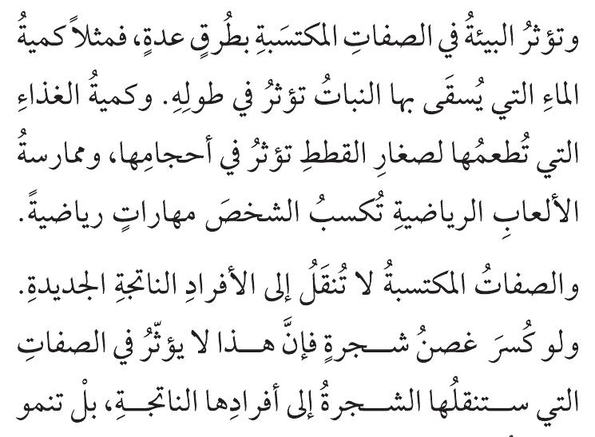
💡 الزبدة
تؤثر البيئة في الصفات المكتسبة: كمية الماء تؤثر في طول النبات، وكمية الغذاء تؤثر في حجم صغار القطط، والألعاب الرياضية تُكسب الشخص مهارات.
⚠️ فخ في الاختبار
الصفات المكتسبة لا تنتقل إلى الأفراد الجديدة. فلو كُسر غصن شجرة لا تنقل الشجرة ذلك إلى أفرادها، بل تنمو أغصان جديدة.
ص٦٥ · السلوك الغريزي والسلوك المكتسب
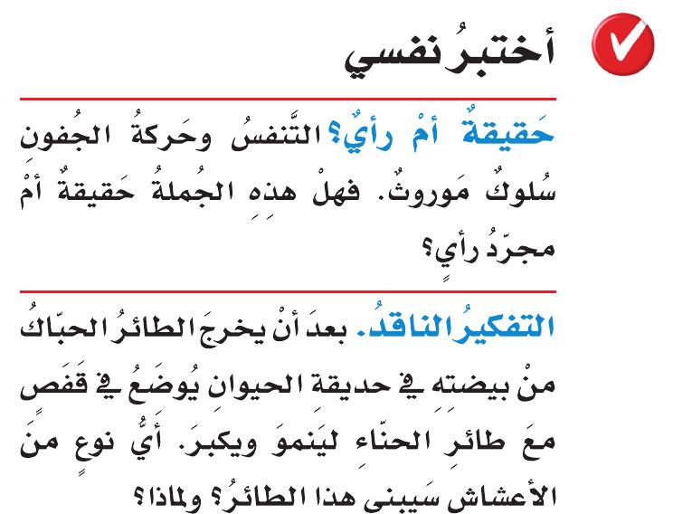
✍️ حلّ «أختبر نفسي»اضغطي لتري الإجابة
حقيقة أم رأي: حقيقة؛ فالتنفس وحركة الجفون سلوك غريزي يولد مع الإنسان.
التفكير الناقد: سيبني عش نوعه نفسه؛ لأن بناء العش سلوك غريزي موروث ولا يحتاج إلى تعلّم.
التفكير الناقد: سيبني عش نوعه نفسه؛ لأن بناء العش سلوك غريزي موروث ولا يحتاج إلى تعلّم.
ص٦٦ · كيف تورث الصفات؟
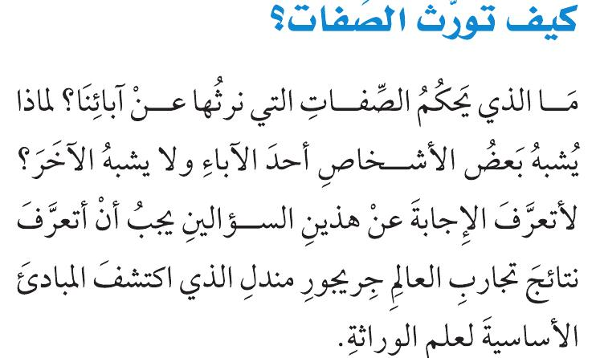
🔍 توضيح
العالم جريجور مندل اكتشف المبادئ الأساسية لعلم الوراثة.
ص٦٦ · كيف تورث الصفات؟
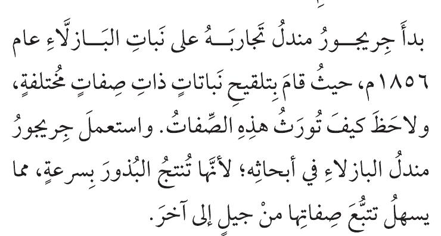
💡 الزبدة
بدأ مندل تجاربه على نبات البازلاء عام ١٨٥٦م؛ لأنها تنتج البذور بسرعة، مما يسهّل تتبّع صفاتها من جيل إلى آخر.
ص٦٦ · كيف تورث الصفات؟
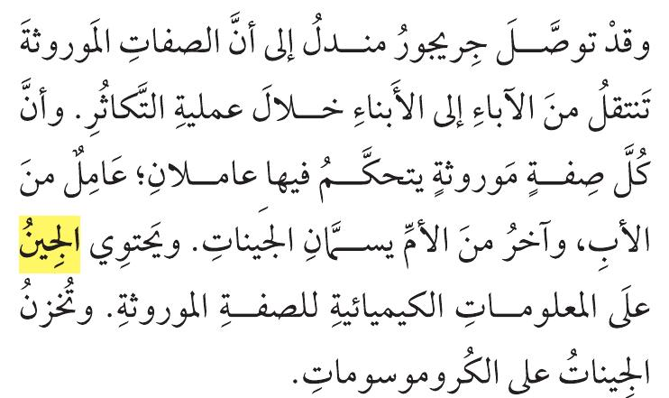
💡 الزبدة
كل صفة موروثة يتحكم فيها عاملان: عامل من الأب، وآخر من الأم، يسمّيان الجينات.
الجين يحتوي على المعلومات الكيميائية للصفة الموروثة، وتُخزَّن الجينات على الكروموسومات.
الجين يحتوي على المعلومات الكيميائية للصفة الموروثة، وتُخزَّن الجينات على الكروموسومات.
ص٦٦ · كيف تورث الصفات؟
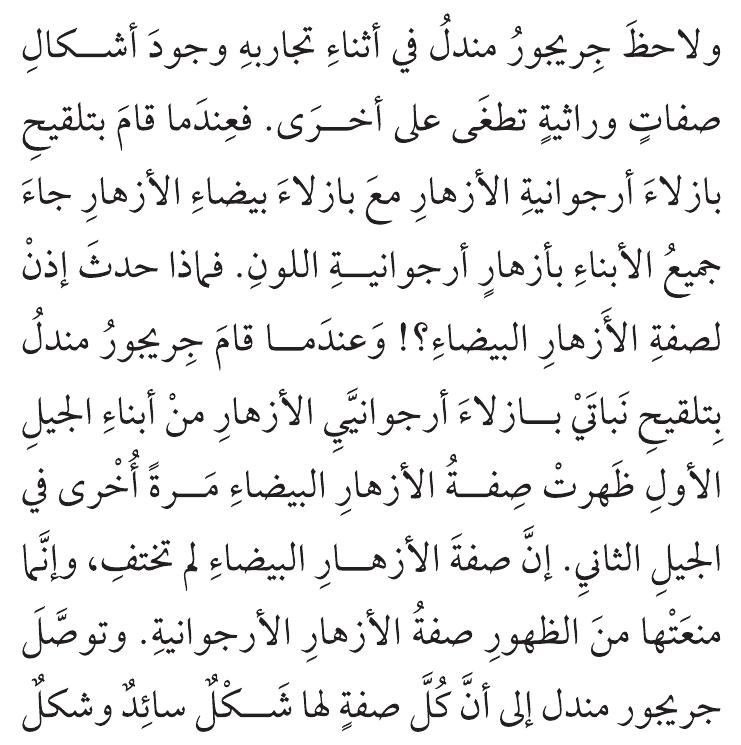
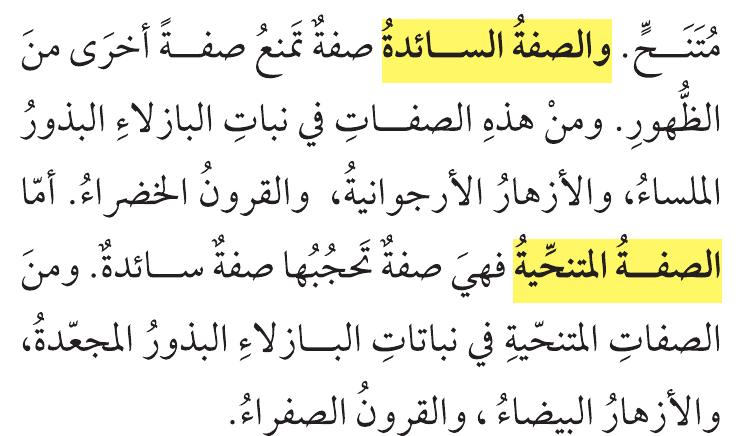
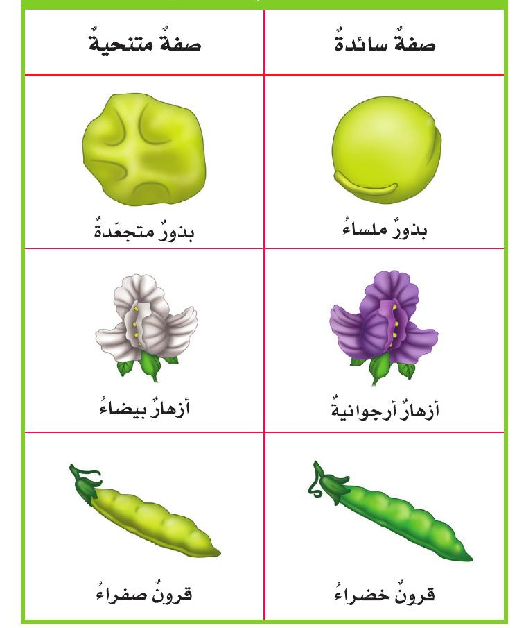
🔍 توضيح
لاحظ مندل أن بعض أشكال الصفات تطغى على أخرى: لما لقّح بازلاء أرجوانية الأزهار مع بازلاء بيضاء الأزهار جاء جميع الأبناء بأزهار أرجوانية! ولما لقّح نباتي الجيل الأول ظهرت الأزهار البيضاء مرة أخرى في الجيل الثاني.
⚠️ فخ في الاختبار
صفة الأزهار البيضاء لم تختفِ، وإنما منعتها من الظهور صفة الأزهار الأرجوانية.
⚖️ انتبهي للفرق
الصفة السائدة
تمنع صفة أخرى من الظهور
بذور ملساء، أزهار أرجوانية، قرون خضراء
بالحرف الكبير: P
الصفة المتنحية
تحجبها صفة سائدة
بذور متجعدة، أزهار بيضاء، قرون صفراء
بالحرف الصغير: p
ص٦٦ · كيف تورث الصفات؟
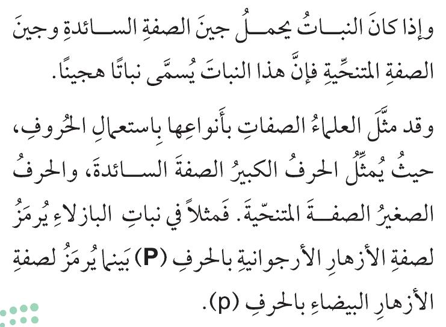
💡 الزبدة
إذا كان النبات يحمل جين الصفة السائدة وجين الصفة المتنحية فهو نبات هجين.
🔍 توضيح
مثّل العلماء الصفات بالحروف: الحرف الكبير للصفة السائدة، والحرف الصغير للمتنحية. ففي البازلاء: P للأزهار الأرجوانية، وp للأزهار البيضاء.
ص٦٧ · تلقيح البازلاء
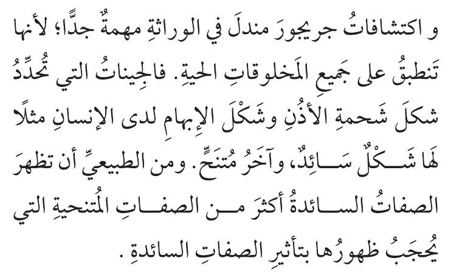
💡 الزبدة
اكتشافات مندل تنطبق على جميع المخلوقات الحية. فالجينات التي تحدد شكل شحمة الأذن وشكل الإبهام لدى الإنسان لها شكل سائد وآخر متنحٍ.
🔍 توضيح
من الطبيعي أن تظهر الصفات السائدة أكثر من المتنحية.
ص٦٧ · تلقيح البازلاء
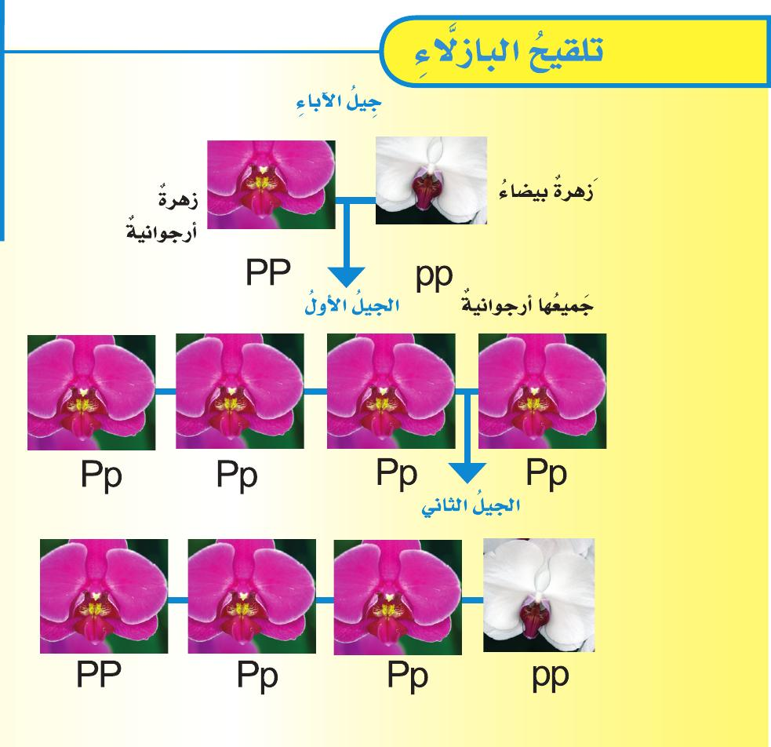
🔍 تتبّعي الشكل
PP أرجوانية×pp بيضاء
الجيل الأول: كلها Pp أرجوانية.الجيل الثاني: PP، Pp، Pp أرجوانية، وpp بيضاء.
ص٦٧ · تلقيح البازلاء
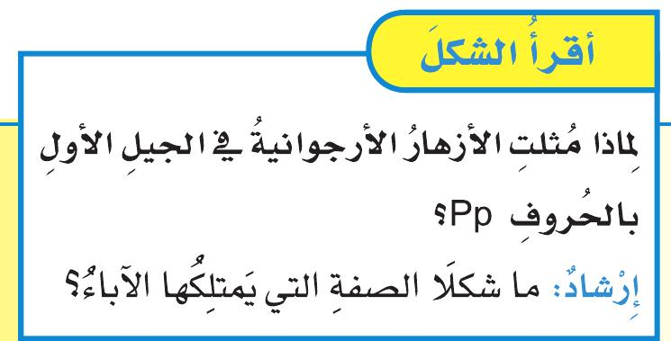
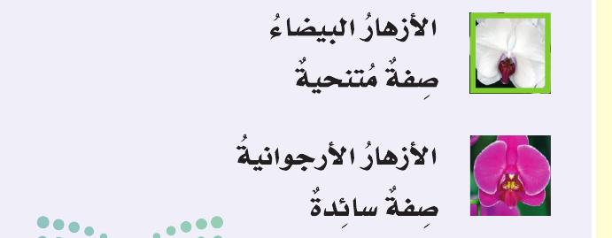
✍️ حلّ «أقرأ الشكل»اضغطي لتري الإجابة
لأن كل نبات في الجيل الأول أخذ شكل الصفة P من الأب الأرجواني، وشكل الصفة p من الأب الأبيض.
ص٦٧ · تلقيح البازلاء
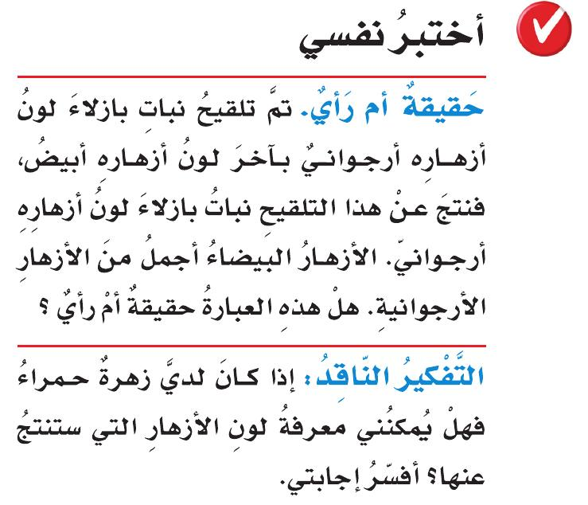
✍️ حلّ «أختبر نفسي»اضغطي لتري الإجابة
حقيقة أم رأي: الجملة رأي؛ فلا يمكن إثبات أن لونًا أجمل من آخر.
التفكير الناقد: لا يكفي ذلك؛ لأن الزهرة قد تحمل جين الصفة السائدة وجين الصفة المتنحية، ولا يظهر عليها إلا السائد.
التفكير الناقد: لا يكفي ذلك؛ لأن الزهرة قد تحمل جين الصفة السائدة وجين الصفة المتنحية، ولا يظهر عليها إلا السائد.
ص٦٨ · مخطط السلالة والانتخاب الطبيعي
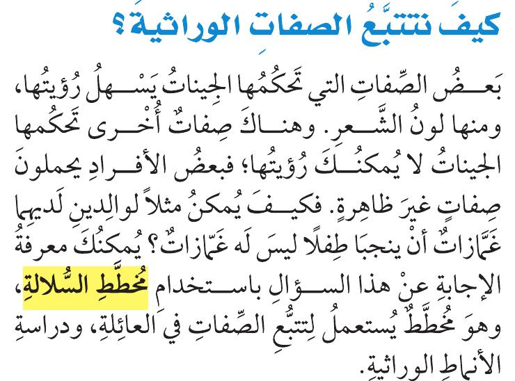
💡 الزبدة
بعض الصفات التي تتحكم فيها الجينات يسهل رؤيتها، وبعضها لا يمكن رؤيته. ومخطط السلالة يُستعمل لتتبع الصفات في العائلة، ودراسة الأنماط الوراثية.
ص٦٨ · مخطط السلالة والانتخاب الطبيعي
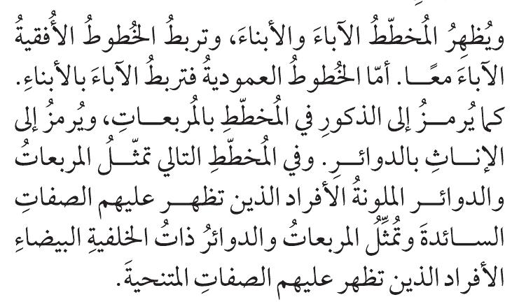
🔍 كيف أقرأ المخطط؟
• المربع للذكور، والدائرة للإناث.
• الخط الأفقي يربط الأبوين، والخطوط العمودية تربط الآباء بالأبناء.
• المربعات والدوائر الملونة للصفات السائدة، والبيضاء للمتنحية.
• الخط الأفقي يربط الأبوين، والخطوط العمودية تربط الآباء بالأبناء.
• المربعات والدوائر الملونة للصفات السائدة، والبيضاء للمتنحية.
ص٦٨ · مخطط السلالة والانتخاب الطبيعي
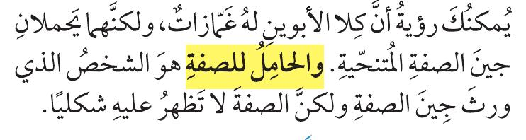
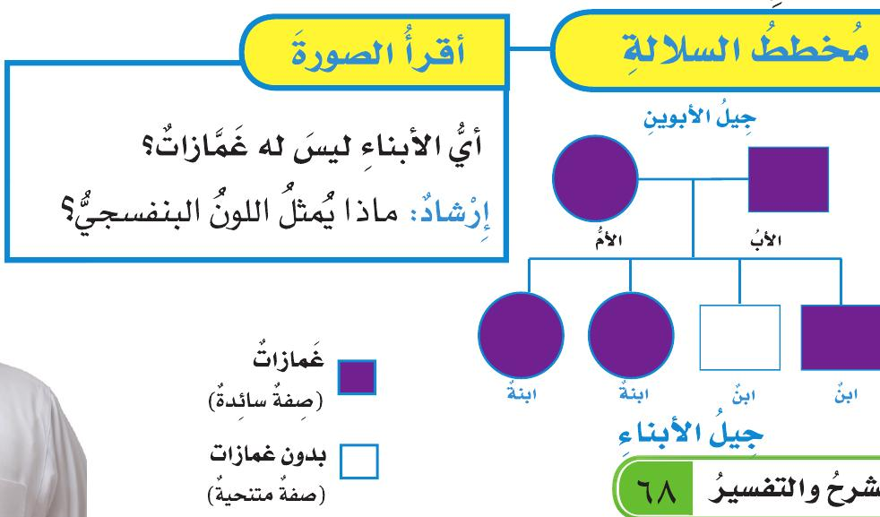
💡 الزبدة
حامل الصفة: الشخص الذي ورث جين الصفة، ولكن الصفة لا تظهر عليه شكليًا. فقد يكون للأبوين غمازات، ويحملان جين الصفة المتنحية.
✍️ حلّ «أقرأ الصورة»اضغطي لتري الإجابة
الابن المرسوم بمربع أبيض ليس له غمازات؛ لأن اللون البنفسجي يمثل وجود الغمازات (صفة سائدة).
ص٦٨ · مخطط السلالة والانتخاب الطبيعي
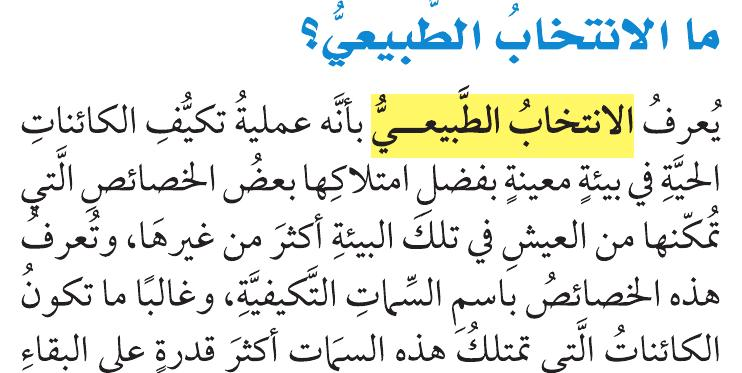
💡 الزبدة
الانتخاب الطبيعي: تكيّف الكائنات الحية في بيئة معينة بفضل امتلاكها بعض الخصائص التي تمكنها من العيش في تلك البيئة أكثر من غيرها، وتسمى هذه الخصائص السمات التكيفية.
ص٦٨ · مخطط السلالة والانتخاب الطبيعي
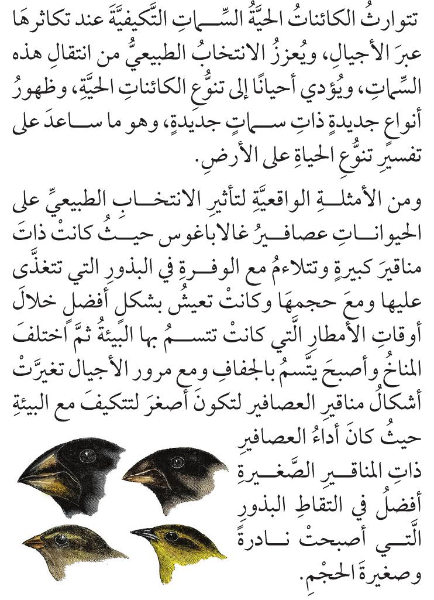
🔍 مثال من الكتاب
عصافير غالاباغوس كانت مناقيرها كبيرة تتغذى على البذور الوفيرة، فلما تغيّر المناخ إلى الجفاف تغيرت أشكال مناقيرها لتكون أصغر؛ لأن ذوات المناقير الصغيرة أفضل في التقاط البذور النادرة صغيرة الحجم.
⚠️ فخ في الاختبار
تتوارث الكائنات السمات التكيفية عبر الأجيال، ويؤدي ذلك أحيانًا إلى تنوع الكائنات الحية وظهور أنواع جديدة.
ص٦٨ · مخطط السلالة والانتخاب الطبيعي
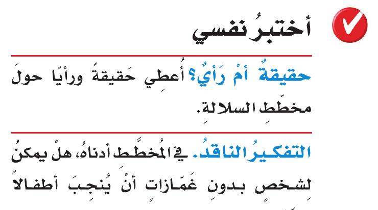
✍️ حلّ «أختبر نفسي»اضغطي لتري الإجابة
حقيقة أم رأي: حقيقة: يُستعمل مخطط السلالة لتتبع الصفات في العائلة. ورأي: مخطط السلالة سهل القراءة.
التفكير الناقد: نعم؛ إذا كان للأب أو الأم الآخر غمازات، فقد يرث الطفل منه جين الصفة السائدة.
التفكير الناقد: نعم؛ إذا كان للأب أو الأم الآخر غمازات، فقد يرث الطفل منه جين الصفة السائدة.
📌 الخلاصة · خريطة المفاهيم
🧬 الجينعلى الكروموسومات
⬇ينقل الصفات بـ
👨👩👧 الوراثةمن الآباء إلى الأبناء
⬇فتظهر
🌸 الصفة الموروثةسائدة أو متنحية
⬇ونتتبعها بـ
📋 مخطط السلالةلتتبع الصفات في العائلة
صفات موروثة
- لون العينين والشعر
- الغريزة: بناء العش والشبكة
- شكل شحمة الأذن
صفات مكتسبة
- لعب كرة القدم
- تعلّم العلوم
- لا تنتقل إلى الأبناء
📌 الخلاصة · لا تخلطي بينها
الصفة الموروثة
كيف نحصل عليها؟تنتقل من الآباء إلى الأبناء
تنتقل إلى الأبناء؟نعم
مثاللون العيون، بناء الشبكة
الصفة المكتسبة
كيف نحصل عليها؟بالتعلم والتدريب والخبرة
تنتقل إلى الأبناء؟لا
مثاللعب الدلفين بالكرة
📌 الخلاصة · لا تخلطي بينها
الصفة السائدة
عملهاتمنع صفة أخرى من الظهور
الحرفكبير P
في البازلاءأزهار أرجوانية، بذور ملساء، قرون خضراء
الصفة المتنحية
عملهاتحجبها صفة سائدة
الحرفصغير p
في البازلاءأزهار بيضاء، بذور متجعدة، قرون صفراء
📌 الخلاصة · أهم النقاط
- الوراثة: انتقال الصفات من الآباء إلى الأبناء، والغريزة سلوك موروث غير مكتسب.
- الصفة المكتسبة تُكتسب بالتعلم والتدريب ولا تنتقل إلى الأبناء.
- اكتشف مندل مبادئ الوراثة بتجاربه على البازلاء: لكل صفة جينان، من الأب ومن الأم.
- الصفة السائدة تحجب المتنحية، والهجين يحمل الجينين معًا.
- مخطط السلالة لتتبع الصفات في العائلة، والانتخاب الطبيعي يبقي الكائنات ذات السمات التكيفية.
🧠 اختبري نفسك · ١ من ٤
لعب الدلفين بالكرة: صفة موروثة أم مكتسبة؟
✅ الجوابفكّري ثم اضغطي
مكتسبة؛ تعلّمها بالتدريب.
🧠 اختبري نفسك · ٢ من ٤
لُقّح نبات بازلاء PP مع نبات pp. ما لون أزهار الجيل الأول؟
✅ الجوابفكّري ثم اضغطي
أرجوانية كلها (Pp)؛ لأن الصفة الأرجوانية سائدة.
🧠 اختبري نفسك · ٣ من ٤
في مخطط السلالة، علامَ يدل المربع الملوّن؟
✅ الجوابفكّري ثم اضغطي
على ذكر تظهر عليه الصفة السائدة.
🧠 اختبري نفسك · ٤ من ٤
ما الشخص الذي ورث جين الصفة ولا تظهر عليه؟
✅ الجوابفكّري ثم اضغطي
حامل الصفة.
🌟
أحسنتِ!
أنهيتِ الدرس. ثبّتي ما تعلمتِه باللعب.
🎮 العبي ألعاب الدرس في «نجمات العلوم»📄 الدرس ملف PDF 📚 دروس الكتاب